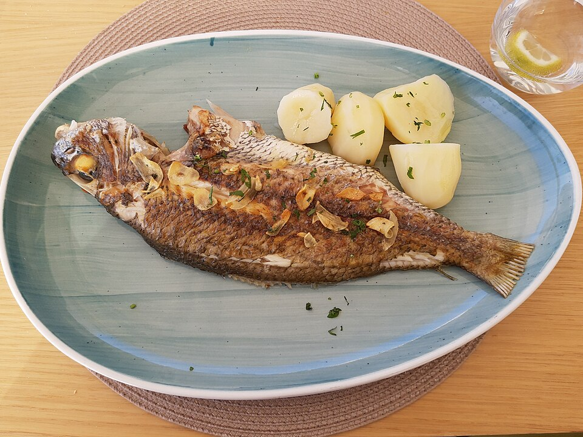

Ingredientes
Preparación
- Precalienta el horno a 180 °C.
- En una fuente para horno, coloca una base de cebolla y tomate en rodajas. Coloca los filetes de corvina encima.
- Sazona con sal, pimienta y tomillo. Distribuye el ajo laminado sobre el pescado.
- Rocía con el vino blanco y el aceite de oliva. Coloca unas rodajas de limón encima.
- Hornea por 20-25 minutos, hasta que el pescado esté cocido y se desmenuce fácilmente con un tenedor.
- Sirve con papas cocidas o arroz.
Dato: La corvina es un pescado muy versátil. Al hornearla con vino blanco y limón, su carne se mantiene jugosa y absorbe todos los sabores.
Errores comunes y cómo evitarlos
- Pescado secoHornearlo por demasiado tiempo. Los filetes se cocinan rápido. Con 15-20 minutos a 180°C es suficiente.
- Se pega al papel o a la fuenteNo usar suficiente base grasa. Usa una base de cebolla y tomate o rocía bien el fondo con aceite de oliva.
Tips Universales de Cocina
- El reposo de la carne: Deja reposar la carne 5 a 10 minutos antes de cortarla. Esto permite que los jugos se redistribuyan y quede mucho más jugosa.
- El atemperado: Saca la carne del refrigerador 30 minutos antes de cocinarla para que se cocine de manera uniforme.
- El truco del ácido: Si un plato sabe soso, agrégale unas gotas de limón o vinagre antes de añadir más sal. El ácido despierta los sabores.
- No laves el pollo crudo: Lavarlo esparce bacterias por la cocina. El calor de la cocción se encarga de eliminarlas.
- El arte de probar: Prueba la comida en cada etapa. Ajusta la sal y los aliños según tu paladar y el de tu familia.
#pescado#horno#plato principal#sano